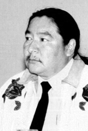

Elijah Harper: Exercise 2 - Reading and Vocabulary
Answer the questions about the story.
Click on the box beside the correct answer.
The Story of Elijah Harper
1 An eight-year-old boy named Elijah sat in the forest with his grandfather. He lived on a reserve in Manitoba called Red Sucker Lake. His grandfather was showing him how to make a beaver trap. Elijah loved spending time on the land. He had learned all about hunting and fishing from his grandfather.
2 One day, a small plane landed on the lake. A white man stepped out. He was sent by the government. His job was to take Elijah from his grandparents and bring him to a residential school, or boarding school. Elijah didn’t want to get on the plane, but he had no choice. At that time, First Nations people didn’t have any rights. They weren’t allowed to vote or be in government. The laws said that First Nations children had to go to residential school, so they would become more like white people.
3 Elijah spent the next 10 years in residential school. The teachers cut his hair. They told him that the things he had learned from his grandfather were the ways of the heathens, or godless people. He was punished if he tried to speak his own language. During that time, many of his classmates tried to run away. But they were always caught and brought back.
4 By the time Elijah became an adult, the laws keeping First Nations people out of government had changed. Elijah had an idea. If he was in government, he could help First Nations people stand up for their rights. So, in 1981, he ran to be an MLA, or member of the government. He won! He was the first Aboriginal MLA in the history of Manitoba.
5 Even as an MLA, it was hard to make change. The students who went to the residential schools didn’t know about their culture anymore. They didn’t feel like they belonged anywhere. They also had to deal with a lot of racism. Elijah was starting to feel powerless. But his chance to make a difference was just around the corner.
6 In Ottawa, the prime minister of Canada wanted to pass a bill, or a suggested law. The bill was supposed to help the country stay united. It said that Canada was created by the English and the French. It protected French language and culture. But it didn’t say anything about the role of First Nations people in building Canada. It did nothing to protect First Nations cultures or languages.
7 The prime minister needed all of the MLAs in Manitoba to agree to the bill to make it a law. But when it was Elijah’s turn to vote, he held up an eagle feather and spoke the word, “No.” He felt that Canada had a duty to protect First Nations language and culture too. With that, the prime minister’s bill did not pass.
8 A picture of Elijah holding an eagle feather was soon on the front page of newspapers across the country. It was a moment that put First Nations issues front and centre in Canadian politics. If the country wanted to stay united, First Nations rights couldn’t be ignored.
9 Elijah Harper inspired a new wave of First Nations people to take part in politics. He paved the way for a new generation of indigenous people to fight for their rights with protests like Idle No More. The Idle No More protest movement was just beginning when he died in 2013. The eagle feather that was laid to rest the day he died has been picked up once more.
Credits:
Story by Shantel Ivits at BC Open Textbooks
Adapted under Creative Commons license
Adaptations and exercises by Richard Carrington, English Language Centre
Photos (edited): Elijah Harper by Mennonite Church USA Archives has no known copyright restrictions
Audio version performed by Peter Polgar, English Language Centre
Story by Shantel Ivits at BC Open Textbooks
Adapted under Creative Commons license
Adaptations and exercises by Richard Carrington, English Language Centre
Photos (edited): Elijah Harper by Mennonite Church USA Archives has no known copyright restrictions
Audio version performed by Peter Polgar, English Language Centre